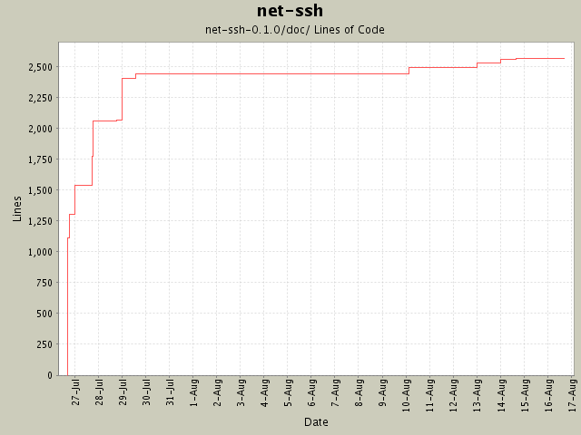

Summary Period: 2004-07-26 to 2004-08-16
[root]/net-ssh-0.1.0/doc

Total Lines Of Code:
2563 (2005-01-07 15:12)
| Author | Changes | Lines of Code | Lines per Change |
|---|---|---|---|
| minam | 27 (100.0%) | 2630 (100.0%) | 97.4 |
Typo prevented session option table from formatting correctly.
1 lines of code changed in:
"Future Directions" chapter included obsolete information.
3 lines of code changed in:
Version bump to 0.1.0
1 lines of code changed in:
Support for hostbased authenticaton.
6 lines of code changed in:
SOCKS4 support. Documented the basic usage of the SOCKS proxies.
32 lines of code changed in:
HTTP proxy now supports basic authorization (thanks, Jochen!).
34 lines of code changed in:
Added chapter on using proxies. Fixed description of public/private keys
(thanks to David Mitchell).
63 lines of code changed in:
Updated docs to reflect existence of new kex algorithm.
2 lines of code changed in:
Added documentation for the uri/sftp and uri/open-sftp routines.
34 lines of code changed in:
Added "recent updates" and tagline.
348 lines of code changed in:
Updated section on generated keys to use rb-keygen instead of ssh-keygen.
8 lines of code changed in:
Added Daniel Hobe's suggestion of user-specified authentication methods. Also
bumped the version to 0.0.5.
7 lines of code changed in:
Updated README and TODO. Added rb-keygen to gemspec file. Fixed typo in
userauth.rb.
1 lines of code changed in:
Finished chapter 6 (SFTP).
284 lines of code changed in:
Chapter 5 (Port Forwarding) finished.
258 lines of code changed in:
Added chapter 4 (executing commands).
236 lines of code changed in:
Added chapter 3.
200 lines of code changed in:
First two chapters of Net::SSH manual.
1112 lines of code changed in:
Generated by StatCVS 0.2.3